Chapter 9: Adjectives¶
Adjective — what kind, how much, which one
An adjective is a word that tells you something about a noun — what kind, how much, which one, whose. Changing just the adjectives can change the whole sentence: a house and a beautiful old wooden house are worlds apart. The most valuable part of this chapter comes at the end — the order of adjectives, the rule that native speakers can't name but never break.
- 1Where an adjective sits — two places
- 2Types of adjective
- 3Degrees of comparison — three steps
- 4The order of adjectives — the most valuable part of this chapter
- 5From adjective to adverb — when to add -ly
- 6The mistakes we really make
- 7A short summary
In one line
An adjective describes or limits a noun or pronoun. A word that tells you about a noun — what kind, how much, which one — is an adjective.
- She has a sharp memory. "sharp" tells us what kind of memory it is.
- Three boys were waiting outside. "three" tells us how many — numbers are adjectives too.
- The tea is cold. An adjective can also come after the noun, through a linking verb.
9.1 Where an adjective sits — two places¶
| Position | Name | Example |
|---|---|---|
| Before the noun | Attributive | a heavy bag · an honest man |
| After a linking verb | Predicative | The bag is heavy. · He seems honest. |
Some adjectives only work in one place
asleep, alive, awake, afraid, alone, ill — these only come after a verb.
✓ The baby is asleep. ✗ an asleep baby (say "a sleeping baby" instead).
On the other hand, main, mere, elder, former only come before a noun — the main road, but "The road is main" is wrong.
9.2 Types of adjective¶
| Type | What it tells you | Examples |
|---|---|---|
| Quality | what kind | a clever boy, tall building, red cloth |
| Quantity | how much (not counted) | some water, much noise, enough time |
| Number | how many (counted) | five books, second chance, many people |
| Demonstrative | which one — pointing | this pen, those chairs |
| Possessive | whose | my bag, their house |
| Interrogative | asking a question | Which shirt? Whose turn? |
| Distributive | one by one | each student, every day, neither option |
| Proper | made from a proper noun | Mughal architecture, Bengali sweets |
| Emphasizing | adds emphasis | with my own eyes, the very thing |
| Article | specific or general | a boy, an apple, the boy |
Emphasizing adjectives — "own" and "very"¶
These adjectives give no new information about the noun — they just put stress on it. Think of the Hindi "apni hi", "khud ki", "wahi" — the sense of "my very own" or "exactly that one".
- I saw it with my own eyes. = I saw it myself, with my own eyes — nobody told me.
- This is the very thing I was looking for. = This is exactly the thing I was looking for.
- She runs her own business. = The business is hers — it belongs to nobody else.
Is 'very' an adjective or an adverb?
the very man — before a noun, after "the" → adjective (that exact man).
very tall — before an adjective → adverb (extremely tall). "own" always comes after a possessive: my own, his own, their own — never "a own house".
Quick guide — which type answers which question¶
| Type | Job / question | Example |
|---|---|---|
| Quality | What kind? | a kind man |
| Quantity | How much? | some milk |
| Number | How many? / Which order? | three pens, the first boy |
| Demonstrative | Which one? (pointing) | that house |
| Possessive | Whose? | our teacher |
| Interrogative | Used in questions | Which bus? |
| Distributive | One at a time | every child |
| Proper | From a proper noun | Indian tea |
| Emphasizing | Gives emphasis | my own eyes |
many / much and few / little — these get mixed up
| Countable | Uncountable | |
|---|---|---|
| A lot | many books | much water |
| Not much (negative feel) | few friends | little money |
| Some (positive feel) | a few friends | a little money |
"few friends" = hardly any friends (sad). "a few friends" = some friends (that's fine). One little "a" flips the whole feeling.
9.3 Degrees of comparison — three steps¶
When you compare two or more things, the adjective changes its form. There are three steps: positive → comparative → superlative.
| How it is formed | Positive | Comparative | Superlative |
|---|---|---|---|
| Short words: + er / est | tall | taller | tallest |
| Ends in -e: + r / st | large | larger | largest |
| consonant + y: y → ier / iest | happy | happier | happiest |
| one vowel + one consonant: double the letter | big | bigger | biggest |
| Long words: more / most | beautiful | more beautiful | most beautiful |
| Completely different (irregular) | good | better | best |
Irregular comparisons — ones to memorise¶
| Positive | Comparative | Superlative | Note |
|---|---|---|---|
| good | better | best | — |
| bad | worse | worst | — |
| little | less | least | for uncountable nouns |
| many / much | more | most | — |
| far | farther / further | farthest / furthest | farther = distance, further = more |
| late | later / latter | latest / last | latest = newest, last = final |
| old | older / elder | oldest / eldest | elder is only for family |
What goes with the comparative and the superlative
Comparative goes with than — She is taller than her brother.
Superlative goes with the — She is the tallest in the class. Use the comparative when comparing two things, the superlative for three or more.
Double comparative — the most common mistake
- Wrong: He is more taller than me.
- Right: He is taller than I am.
-
Why: The -er in "taller" already makes it a comparative — adding "more" in front says it twice. An adjective gets only one comparison marker: either -er or more. In Hindi we say "zyada lamba" (more tall), which is why "more" sneaks in.
-
Wrong: She is the most cleverest girl.
- Right: She is the cleverest girl.
- Why: The same mistake with the superlative — "most" is extra in front of "cleverest".
These adjectives can't be compared
perfect, unique, complete, dead, round, square, impossible, full, empty — these are absolute. "More perfect" or "very unique" is technically wrong, because nothing goes beyond perfect.
9.4 The order of adjectives — the most valuable part of this chapter¶
When two or three adjectives come before one noun, they follow a fixed order. We often break this order, and then the sentence sounds "odd" even though the grammar is correct. Native speakers don't remember the rule — they remember how it sounds. We'll start with the rule, and the ear will come later.

| # | Category | Question | Examples |
|---|---|---|---|
| 1 | Opinion | what do I think of it? | lovely, ugly, boring, delicious |
| 2 | Size | how big? | big, small, tall, long |
| 3 | Age | how old? | old, new, young, ancient |
| 4 | Shape | what shape? | round, square, flat |
| 5 | Colour | what colour? | red, black, golden |
| 6 | Origin | where is it from? | Indian, Chinese, Punjabi |
| 7 | Material | what is it made of? | wooden, silk, steel, plastic |
| 8 | Purpose | what is it for? | writing (desk), sleeping (bag) |
Mistakes caused by breaking the order
- Wrong: a red big balloon
- Right: a big red balloon
-
Why: Size (2) comes before colour (5). Remember the car numbers.
-
Wrong: a cotton white shirt
- Right: a white cotton shirt
-
Why: Material (7) sits closest to the noun, and colour (5) comes before it.
-
Wrong: an old beautiful temple
- Right: a beautiful old temple
-
Why: Opinion (1) sits farthest from the noun, and age (3) comes after it.
-
Wrong: a steel small Japanese watch
- Right: a small Japanese steel watch
- Why: All three were in the wrong order. The right order: size (2) → origin (6) → material (7). Close your eyes and ask yourself which car number each one is.
Don't use more than three
The rule covers eight categories, but in real English you will rarely see more than two or three adjectives together. Too many make a sentence heavy. If you need four, use a comma or "and", or split the sentence in two.
9.5 From adjective to adverb — when to add -ly¶
An adjective goes with a noun; an adverb goes with a verb. For most adjectives, adding -ly makes the adverb.
| Adjective | Adverb | With a noun | With a verb |
|---|---|---|---|
| careful | carefully | a careful driver | drives carefully |
| quick | quickly | a quick answer | answered quickly |
| happy | happily | a happy child | played happily |
| good | well | good English | speaks well |
| fast | fast | a fast car | runs fast |
| hard | hard | hard work | works hard |
good and well
✓ Her English is good. (about a noun)
✓ She speaks English well. (about a verb)
✗ She speaks English good. "good" is the adjective, "well" is the adverb — always remember this pair.
9.6 The mistakes we really make¶
Common Indian-English mistakes with adjectives
- Wrong: My brother is more taller than me.
- Right: My brother is taller than I am.
-
Why: One comparison per adjective — either -er or more. In Hindi we say "zyada lamba" (more tall), so both end up in the English sentence.
-
Wrong: She is senior than me.
- Right: She is senior to me.
-
Why: A few adjectives — senior, junior, superior, inferior, prior, preferable — take to instead of "than", because they come from Latin.
-
Wrong: This is the most best option.
- Right: This is the best option.
-
Why: "Best" is already a superlative — nothing goes beyond it. In the same way, "most worst" and "more better" are wrong.
-
Wrong: She speaks very good English… and she speaks English good.
- Right: She speaks very good English… and she speaks English well.
-
Why: The first one is fine (good + the noun English). The second has a verb, so it needs an adverb — well.
-
Wrong: He bought a new nice phone.
- Right: He bought a nice new phone.
-
Why: Opinion (nice) comes before age (new). The reversed version isn't ungrammatical, but it jars on a native speaker's ear straight away.
-
Wrong: I have less friends in this city.
- Right: I have fewer friends in this city.
-
Why: Use "fewer" with nouns you can count and "less" with uncountable nouns — less water, fewer bottles.
-
Wrong: My all books are new.
- Right: All my books are new.
-
Why: "All, both, half" come before the possessive — all my, both your, half his. The Hindi "mere saare" comes out in the wrong order if translated word for word.
-
Wrong: She is my elder than me.
- Right: She is older than me. / She is my elder sister.
- Why: "Elder" is used only before a noun, and only in the family — elder brother, elder sister. To compare, say "older than".
9.7 A short summary¶
Remember four things
1. An adjective describes a noun; an adverb describes a verb.
2. Only one comparison per adjective — either -er or more.
3. than goes with the comparative, the goes with the superlative.
4. With several adjectives, the order is: opinion farthest, material closest.
9.8 Practice — Adjectives¶
Exercise 1
Which order is correct?
- a beautiful big old house
- a big beautiful old house
- an old big beautiful house
- a big old beautiful house
Hint: Where does opinion go, and where does size go?
Answer
a beautiful big old house
The order is opinion (beautiful) → size (big) → age (old). Opinion sits farthest from the noun because it is the most personal judgement; the others are facts.
Exercise 2
She is ___ than her sister.
- taller
- more taller
- tallest
- more tall
Hint: How many comparisons can one adjective take?
Answer
taller
The -er in 'taller' already makes the comparison, so adding 'more' says it twice. Short adjectives take -er, not more.
Exercise 3
He is ___ to me in the office.
- senior
- more senior than
- seniorer
- most senior
Hint: Some adjectives don't take 'than'.
Answer
senior
Senior, junior, superior, inferior come from Latin and take 'to', not 'than'. So 'senior to me' is correct.
Exercise 4
I have ___ books than you.
- fewer
- less
- lesser
- little
Hint: Books can be counted.
Answer
fewer
Use 'fewer' with countable nouns and 'less' with uncountable ones — fewer books, less water. Books can be counted, so fewer.
Exercise 5
She sings very ___. (adverb form of 'good')
Hint: You are describing the verb, not a noun.
Answer
well
'sings' is a verb, and a word that describes a verb is an adverb. The adverb of 'good' is 'well' — so 'sings well'.
Exercise 6
This is the ___ day of my life. (superlative of 'happy')
Hint: The rule for words ending in consonant + y.
Answer
happiest
When -y follows a consonant, the y becomes -iest: happy → happiest. 'Most happy' isn't exactly wrong, but it sounds heavy.
Exercise 7
The order is wrong in this sentence — tap the word in the wrong place.
He wore a cotton white kurta to the wedding.
Answer
Wrong word: cotton.
Corrected: He wore a white cotton kurta to the wedding.
Material (cotton) sits closest to the noun, and colour (white) comes before it. The two were swapped.
Exercise 8
Find the wrong word.
This phone is more cheaper than that one.
Answer
Wrong word: more.
Corrected: This phone is cheaper than that one.
'cheaper' is already a comparative, so 'more' is extra. This habit comes from the Hindi 'zyada sasta'.
Exercise 9
One word is in the wrong place.
My all relatives came for the function.
Answer
Wrong word: all.
Corrected: All my relatives came for the function.
'all' comes before the possessive — all my, all your, all his. Translating the Hindi 'mere saare' word for word reverses the order.
Exercise 10
'I saw the accident with my own eyes.' — what type of adjective is 'own' here?
- Emphasizing
- Possessive
- Quality
- Distributive
Hint: It gives no new information, it only stresses.
Answer
Emphasizing
'own' and 'the very' put stress on the noun — they are Emphasizing adjectives. 'my' is possessive, but 'own' adds emphasis on top of it.
Exercise 11
This is the ___ book I wanted! (exactly that one)
Hint: The word that adds stress after 'the'.
Answer
very
'the very + noun' = exactly that thing. Here 'very' is an adjective, because it describes the noun (book).
Exercise 12
Match each type of adjective to its question.
| A | B |
|---|---|
| Quality | Whose? |
| Quantity | One at a time |
| Possessive | Which one? |
| Distributive | What kind? |
| Demonstrative | How much? |
Answer
Quality — What kind?; Quantity — How much?; Possessive — Whose?; Distributive — One at a time; Demonstrative — Which one?
Each type answers one question — what kind (quality), how much (quantity), whose (possessive), one by one (distributive), which one by pointing (demonstrative).
Exercise 13
Match each adjective to its order number.
| A | B |
|---|---|
| lovely | 3 — age |
| huge | 6 — origin |
| ancient | 7 — material |
| Japanese | 1 — opinion |
| wooden | 2 — size |
Answer
lovely — 1 — opinion; huge — 2 — size; ancient — 3 — age; Japanese — 6 — origin; wooden — 7 — material
The more personal the adjective is, the farther it sits from the noun; the more it is a real quality of the thing, the closer it sits. That is why opinion comes first and material comes last.
Exercise 14
Put the adjectives in the correct order.
Words: a / bought / round / table / wooden / She / small
Answer
She bought a small round wooden table
The order is size (small) → shape (round) → material (wooden) → noun (table). Material always stays right next to the noun.
Exercise 15
Say this line aloud — three adjectives together, without stopping.
He has a beautiful old Indian painting
Answer
Say: He has a beautiful old Indian painting
When you speak, you don't hear commas between the adjectives — it flows in one stream. In the right order your tongue glides; in the wrong order it stumbles.
What to do next
Today, pick five things in your home and describe each with two or three adjectives — "a small black plastic chair". The train order will stick. The next chapter is Adverb — the adjective's partner.